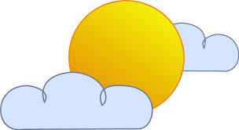

You have found yourself in front of a monastery....

A monk greets you.
MONK: Hello, young explorer....
MONK: I am training explorers like yourself to rid themselves of cognitive biases. Cognitive biases are instances in which humans consistently make irrational decisions. Would you like a lesson?
Monk Lesson: Know thyself
It is important to know how much (or how little) you know. Most people tend to be overconfident about their answers. We will attempt to train the Overconfidence Bias out of you.
Thank you for washing days of . Together, with your credits, I think you have gained enough character to graduate from monk school.
MONK: By the way, I think we might have reduced your susceptibility to the Overconfidence Bias...
MONK: Very good. To reach the next stage in your journey to reduce cognitive biases, you may want to seek out a figure named Kahneman. He will administer to you a test of your abilities.
MONK: His whereabouts have been unknown for some time, so good luck finding him.
You have found yourself graduated from monk school on a solo journey across the land to gain knowledge and find Kahneman.
You decide to seek help from the oracle on top of the mountain.

It takes you days and days to climb to the peak of the mountain...
And days....
And even more days....
But you finally make it.
ORACLE: So, you're searching for Kahneman?
The oracle peers into your eyes.
ORACLE: Well, I could tell you where he is but that would defeat the point.
ORACLE: Instead, I will give you hints about where he is and you have to combine the hints to form your best guess.
ORACLE: Do you understand?
Oracle Lesson: Update beliefs
ORACLE: Based on past experience, Kahneman is likely either at the Cave of Uncertainty or the Tavern of Decision-Making. Unfortunately, these places are weeks of travelling away from each other, so you will want to be reasonably certain before embarking.


ORACLE: Well, Kahneman goes to the tavern to study people's decision-making abilities. He goes to the cave to process his data and write papers. In the past Kahneman has split his time between the cave and the tavern in a roughly 2 to 3 ratio (40% vs 60%).
ORACLE: You can use this information to create a visual picture of your knowledge. Drag up the bars until their relative heights reflect what you currently know about Kahneman's location.
ORACLE: Correct. This picture is called your prior belief.
ORACLE: Without any additional information, the probability of Kahneman being at either location is shown by this graph. Looking at the heights of the graph, you can visually see that he is 50% more likely to be at the tavern.
Suppose that the weather has been nice recently, and someone tells you that when the weather is nice Kahneman is more likely to prefer going to the cave than spending all day in a tavern.
If the weather is nice, say Kahneman favors going to the cave over the tavern six times more than normal. Incorporate this new evidence into you belief by dragging up the evidence bars.
If you think about it, the evidence bars should multiplicatively scale up your prior belief to form your new belief. This multiplication is something you can perform with your visual system.
What is the probability that Kahneman is in the cave if the weather is nice? (Hint: view the new belief tab to see how the widget would perform the calculation).
ORACLE: Often times, information about our world comes in multiple parts. We have to combine these parts to form a unified belief. Logic tells you how to do this.
ORACLE: Pretend that you are a detective.

ORACLE: During a case you discover some new evidence. What you think after obtaining new evidence should depend both on
(a) what you previously believed and (b) the new evidence.
These two parts go by other names including
(a) prior belief and (b) likelihood of evidence.
When making guesses, sometimes people use the new evidence and forget to include their prior knowledge, this is called Base Rate Neglect. Sometimes they stick too firmly to prior knowledge and forget to include the evidence, this is called Bayesian Conservatism.
As long as you use the widget I have given you, you will remember to use both your prior belief and the likelihood of evidence to form your new opinion.
Take this widget into your right sidebar so that you can update your beliefs on Kahneman's location as you get new information.
At this point, all you have is the 2:3 prior on Kahneman's location. The weather evidence was hypothetical.
ORACLE: Well, that's all I can tell you. You better get off this mountain before you freeze.
ORACLE: This won't keep you warm. But here's a pair of glasses for seeing beliefs as graphs that you might want for your journey.

You descend the other side of the mountain into a dark forest.
A shadowy figure approaches you.

SHADOW FIGURE: You have an unusual power of inference about you. I do too and infer that you are looking for someone.
SHADOW FIGURE: Ha! Well, I don't know where he is.
SHADOW FIGURE: But I've searched for him in the past, and you also need a Thing.
SHADOW FIGURE: Well, he doesn't take visitors easily. You want to take the test of your abilities, I assume.
SHADOW FIGURE: But usually you can't get him to see you just by declaring that. I would suggest either saying that you are selling cookies or that you are selling beer. You need to infer which type of food he is interested in before you see him.


SHADOW FIGURE: Because it's part of the test to infer what he likes!
SHADOW FIGURE: Ah, I see you have been trained by the Bayesian Oracle.
SHADOW FIGURE: Well prior beliefs are a bit subjective, but I would say that for most people, you should expect 2 : 5 beer versus cookies (29% vs 71%).
SHADOW FIGURE: After all, who doesn't like cookies?
You attempt to thank the shadowy figure, but he has vanished.
You have made it out of the shadow forest and into the neighboring town. You are still over a week of journeying from both the tavern and the cave.

And there is a somewhat distressed looking farmer on the side of the road.
FARMER: There have been thefts from my chicken coop. The local animal population consists of 7 raccoons to every 3 foxes (70% raccoons, 30% foxes). Judging by the type of marks on the door alone, the marks look five times more likely to be caused by a fox than a raccoon.
FARMER: I want to trap the animal, but I only have traps for foxes. If a raccoon goes in, it will get hurt. If I set up the trap, what is the probability that the animal I will catch will be a fox?
Show the farmer the appropriate new belief.
FARMER: So what is the numerical probability that it will be a fox?
FARMER: Wow, thanks a lot, traveller!
FARMER: Can I invite you home for breakfast?
You realize that you have been happily staring off into space thinking these thoughts, and have been a pretty lousy meal companion. After a hearty homecooked meal, the farmer hints that you should continue on your way.
FARMER: You should see the mayor. His office is yonder.

It's a small town so you are able to walk straight into the mayor's office. The mayor is rubbing his beard with a furrow on his brow.

MAYOR: I am trying to choose a builder for a rock throwing machine. The two handymen in the town are Billy and Bob. 60% of the time Billy's quality is better than Bob's. However, Bob seems really excited about building a rock throwing machine, and I have reason to believe that on this occasion, his odds are two times better than normal to outperform Billy. What is the probability that excited Bob will produce the better result?
Show the mayor the appropriate belief.
MAYOR: So what is the probability that Bob will do a better job than Billy?
MAYOR: Hey, thanks, adventurer!
MAYOR: You're not from around these parts are you?
You tell the Mayor that you're searching for Kahneman or other travellers who might know of his whereabouts.
MAYOR: Oh Kahneman? So many people have been looking for him these days.
MAYOR: NOPE.
MAYOR: Cookies. Definitely cookies.
MAYOR: I'd say that he likes cookies 2 times more than the average person. And he's about average for beer.
Use the mayor's information to update your beliefs about Kahneman.
You thank the mayor and wish him best of luck with his rock thrower.
As you journey through villages, acquiring the goodwill of all you meet through your powers of rational inference, news begins to spread about you.
An adventurer approaches you.
ADVENTURER: I hear you are looking for Kahneman.
ADVENTURER: I am 90% sure that Kahneman is at the cave of uncertainty!
You talk to the adventurer in attempt to find out his intentions. He seems to have no ill wishes to you.
Discounting for his questionable reliability, you think that it is more reasonable to assume that the man is correct with 75% probability (3 : 1) instead of 90% (9 : 1).
Use the adventurer's information to update your belief on Kahneman's location.
Nice. Your belief of Kahneman's location has proportionally been updated.
That you have travelled around quite a bit but news about Kahneman has been rather quiet. You infer that this is more likely if he were in a secluded cave than in a tavern with other people.
You are uncertain but think that this level of quiet might be evidence to suggest that Kahneman is more likely to be at the Cave (1.5 : 1).
Combine your observation with the adventurerr's information to further skew your evidence and produce a new belief on Kahneman's location.
Correct! You multiplied to combine two pieces of evidence into one likelihood.
You were able to do that because the two pieces of information were independent.
You think that Kahneman is probably at:
And you think that you might want to bring some:
You shift course and proceed directly to the Cave of Uncertainty.
After almost a week, you make it to the cave with cookies in hand....
"Hello, Kahneman?" you venture tentatively.
You just hear your echo. But in the cave of uncertainty, lies a fluttering scroll with a test.
What was the codeword scrawled at the end of the test?
As you complete the test, the walls of the cave begins to shudder and hiss. The walls begin to fold in, and you are suddently uncertain that this was truly the Cave of Uncertainty.
If you would like, email Cassandra (cssndrx@gmail.com) to be notified as more of the adventure is added.
To be continued....
Current quest: Train against overconfidence with the monk
| units | 0 |
| duty | 0 |
Current quest: Train with the Bayes Oracle
In this part, the story moves forward only when your perform the correct sequence of actions. If the game seems stuck, or a button doesn't seem to work, double-check that your choice is both mathematically correct and matches your gut sense.